What else looks like age? Linkage, inbreeding, drift, dropout, gene flow and selection
Source:vignettes/articles/lookalikes.Rmd
lookalikes.Rmdhybridclock reads the age of a hybrid population from the hybrid index (S, the share of alleles from species 2) and interspecies heterozygosity (H, the share of markers with one allele from each species) of its individuals, and from how those vary across individuals and markers. Several other processes change the same patterns without any change in age. This article shows what each one does, why it can be mistaken for age, and how hybridclock keeps it apart. The figures are drawn from the package’s own simulator, except for selection, which is illustrated.
The starting point: why later generations look alike
Each large circle below is one individual at one diagnostic marker, and the two dots inside are its two alleles: red from species 1, blue from species 2. F1s carry one allele from each species. In F2s, a quarter are red-red, half red-blue and a quarter blue-blue. The F3 generation, and every later generation of a randomly mating swarm, has the same expected mix, so a single marker in a single individual cannot tell an F2 from an F8.
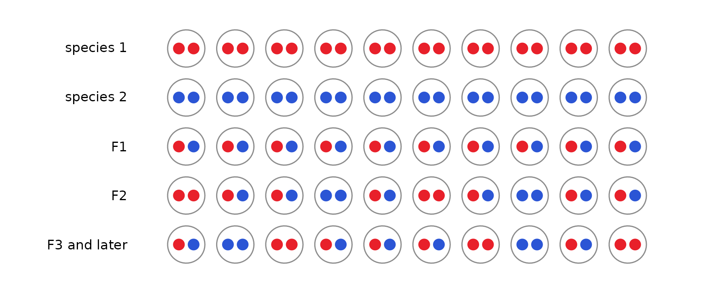
Across many markers, an individual’s S and H are averages of these one-marker pictures. What changes with age is subtler: how genotypes are arranged along chromosomes, how unevenly ancestry is spread across markers, and how often individuals look like recent crosses. The processes below change those same patterns.
Linkage
Markers on the same chromosome are inherited together until recombination separates them. In the first hybrid generations the blocks of each species’ ancestry are long; every generation of recombination cuts them shorter. Below, five individuals from the second hybrid generation (top) and the eighth (bottom) of the same closed population are painted along three chromosomes: red where both copies come from species 1, blue where both come from species 2, and purple where the individual is heterozygous. Asterisks mark a typical panel of 30 markers.
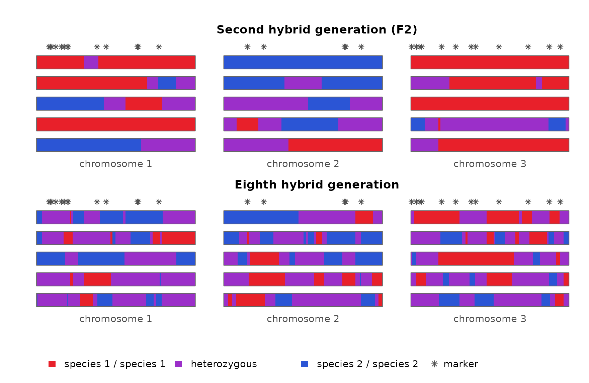
Within one individual, markers that sit in the same long block all report the same ancestry, so they repeat one piece of information rather than adding new ones. An individual’s S and H are averages over its markers, and with long blocks those averages rest on only a few independent pieces. Averages of a few pieces vary more than averages of many, so F2s typed at linked markers differ from one another much more than F2s typed at unlinked markers: one may happen to carry mostly species-2 blocks, another mostly species-1 blocks. The triangle shows F2 families typed at 30 markers, either unlinked or on three short chromosomes.
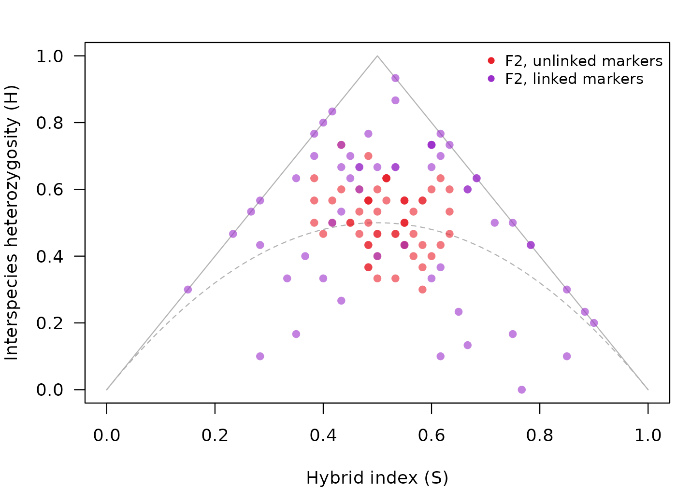
A spread like this is not what a single F2 family looks like when markers are assumed to be independent. It looks like a mix of hybrid classes: some individuals near the F1 corner, others near the backcrosses or below the dashed curve, where later generations fall. Classified one at a time on the assumption that markers are independent, only about 40% of these F2s are called F2, and a fifth are called later-generation hybrids:
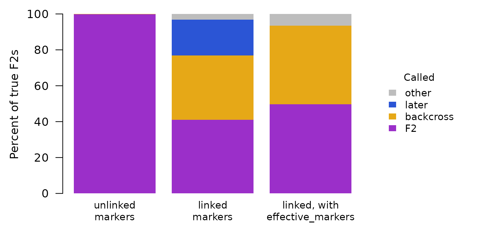
So an F2 family typed at linked markers can be read as a more mixed, more advanced population than it is.
How hybridclock handles it. The simulated reference
includes linkage: either the real genetic map (map, with
map_scale for uncertainty in its length) or a range of
chromosome numbers and map lengths, so clustered markers in the data are
compared with simulations that cluster the same way. For individual
classes, effective_markers() tells the classifier how many
independent markers a linked panel is worth, which removes the false
“later” calls (right-hand bar above); with so few independent markers,
the remaining classes stay uncertain, which is why the population clock
relies on simulations that include linkage. With a map, the clock also
counts how often an individual’s genotype switches between neighboring
markers. Those switches mark the boundaries between ancestry blocks, and
they become more common with every generation:
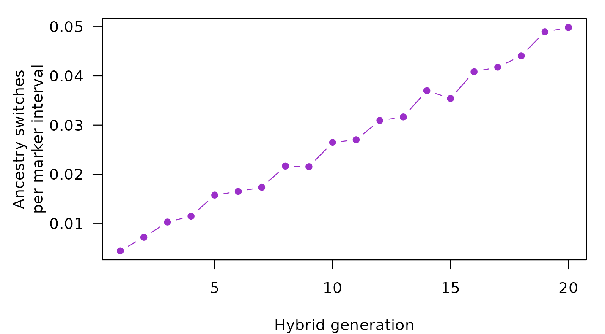
Inbreeding
Inbreeding (mating between relatives, for example in small breeding groups) removes heterozygotes. Below, the top two rows show a diagnostic marker in a young, inbred population and in an older population that mates at random: both have fewer heterozygotes than an F2. The bottom two rows show a marker that is polymorphic within both species (gold and grey alleles, with nothing to do with hybrid ancestry). There the two populations differ: only the inbred one is missing heterozygotes.
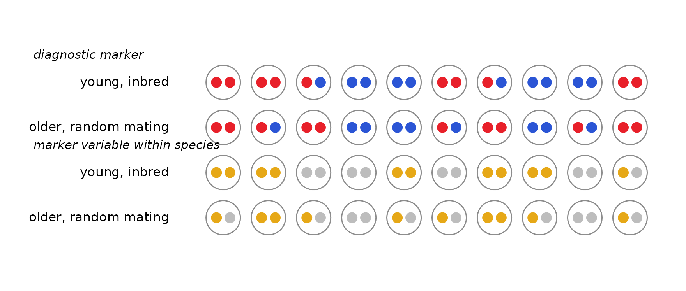
Lower heterozygosity at diagnostic markers is a sign of age, so inbreeding alone can make a young population look old. The simulations below compare populations at the fifth hybrid generation, bred in three small groups with frequent sibling mating, against populations of 60 breeders that have mated at random for thirty generations. At the diagnostic markers they look alike: both have about 20% fewer heterozygotes than random mating at their ancestry would give (left). Only the inbred populations are also missing heterozygotes at markers that vary within species (right, the inbreeding coefficient at those markers).
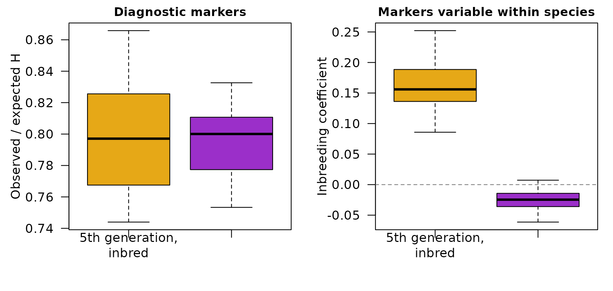
How hybridclock handles it. Markers that vary within
both species (shared_loci()) give a separate measure of
inbreeding and linkage disequilibrium, and the simulated reference
includes sibling mating and separate breeding pools
(sib_mating, pools). The clock learns to read
age from the diagnostic markers while accounting for inbreeding measured
at the shared ones.
Drift
Each generation, a breeding population passes on a random sample of its alleles, like drawing beads from a jar. At each marker, the share of species-2 ancestry wanders away from the population average, and the smaller the population, the faster it wanders. Below, each jar is one marker, and its 20 beads show the share of species-2 ancestry (blue) at that marker in the population.
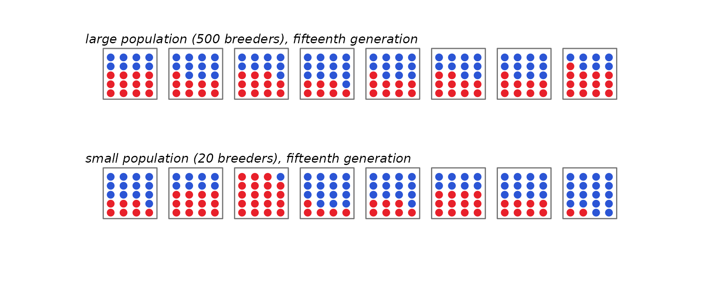
Drift acts on allele frequencies. In a population founded by F1s, every diagnostic marker starts with half its alleles from each species. As the share at each marker wanders, two things happen at once:
- at each marker, the alleles become more alike. As the share moves toward 0 or 1, more and more individuals carry the same species’ allele there, so individuals also become more alike;
- across markers, the shares become more different. Some markers end up mostly species 1 and others mostly species 2, so ancestry becomes uneven along the genome.
These are the same process seen two ways. hybridclock measures the second as the variance of the species-2 share across markers, divided by its largest possible value. It runs from 0, when every marker has the same share, to 1, when every marker is fixed for one species or the other (like FST, with markers in place of populations). On the left below are the shares at all 400 markers in the two populations above; on the right is the measure over 30 generations at three breeding sizes:
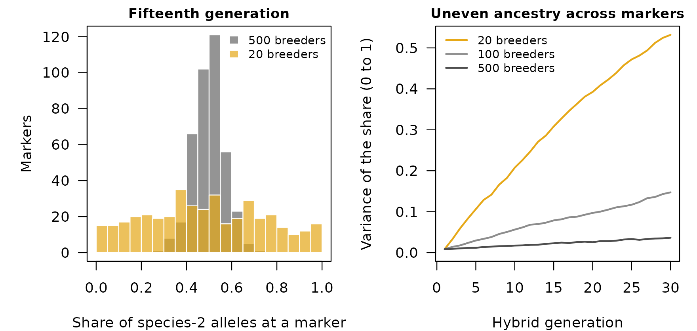
Ancestry becomes uneven with time, and in a closed population its pace depends on the breeding size. A small population reaches in a few generations the unevenness that a large one reaches only after many, so time and breeding size trade off: a small population can look as old as a much older large one.
Separate populations drift independently, so the same marker can end up mostly species 1 in one population and mostly species 2 in another, and the populations grow apart. hybridclock dates each population on its own and does not use that divergence.
Drift is also tied to linkage and inbreeding. In a small population, drift creates associations between markers even on different chromosomes (linkage disequilibrium), and mating among relatives becomes unavoidable, so drift, linkage disequilibrium and inbreeding grow together. Linkage disequilibrium from drift pushes the same way as linkage on a chromosome: markers that are inherited together make individuals differ more. In the simulations, though, the alleles becoming more alike at each marker outweigh it, and individuals still become more alike as the population drifts. hybridclock measures linkage disequilibrium and inbreeding at markers that vary within species, and its simulations combine breeding size, mating among relatives and the map, so the clock sees these processes together rather than one at a time.
How hybridclock handles it. In a closed population,
after the first few generations drift is the main clock. The reference
draws the breeding size from a range (breeders), so the
estimate allows for any size in that range. Give the widest range that
is plausible: a range that misses the true size gives precise but wrong
ages, while a generous one only widens the interval.
Heterozygote dropout
With low sequencing depth or allele-specific failure, one allele of a heterozygote can go undetected, and the individual is called homozygous (dashed dot below). Missing heterozygotes look like the loss of heterozygosity that comes with age, so individuals slide down the triangle.
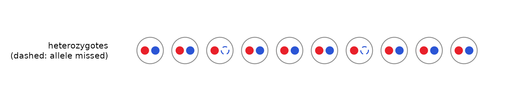
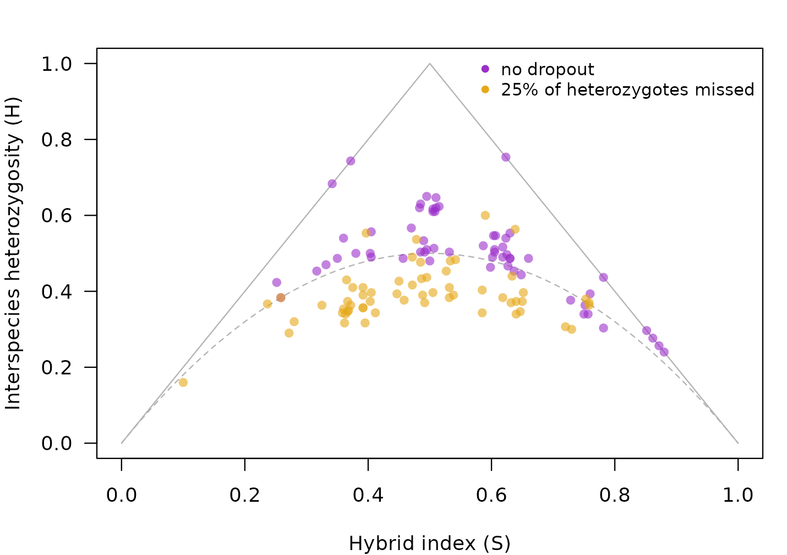
How hybridclock handles it. The reference simulates
dropout over a range (het_dropout), and the classifier
behind the class shares is told the dropout rate through
class_settings(het_dropout = ...), so the simulated and the
real samples are read the same way. The bettongs in the full tutorial are an example.
Continuing gene flow
When pure individuals of one species keep arriving, they mate with hybrids and start new, short pedigree lines. Hybrid age then stops growing and levels off, however long the species have been in contact:
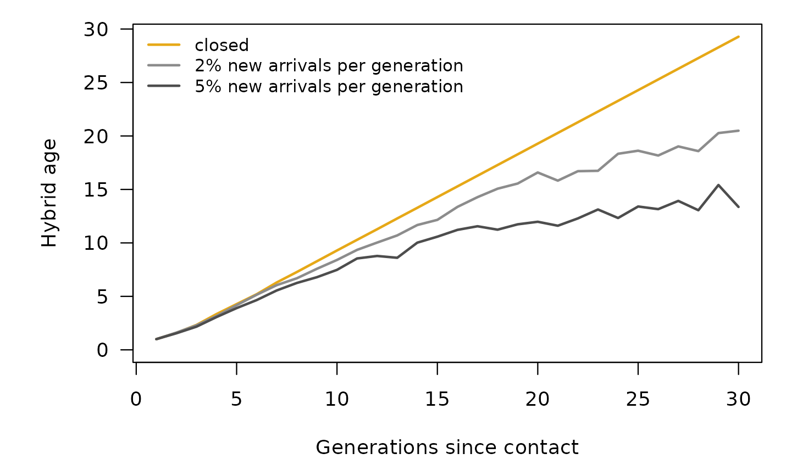
This is not an error: hybrid age measures the pedigrees of the hybrids, not the time since contact. But it means that a young-looking population may have been in contact for a long time.
How hybridclock handles it. The reference includes arrivals of either species, at constant rates or rates that stop or start partway, and the package also reports the hybrid age of the rarer species’ lines and the probability that pure individuals are still arriving. With continuing gene flow, hybrid age is a lower bound on the time since contact.
Selection
Selection against one species’ ancestry in parts of the genome removes that ancestry from those regions faster than drift would. The painting below illustrates this (it is a drawing, not a simulation): the same individuals as in the linkage section, with species-2 ancestry purged from most of chromosome 2.
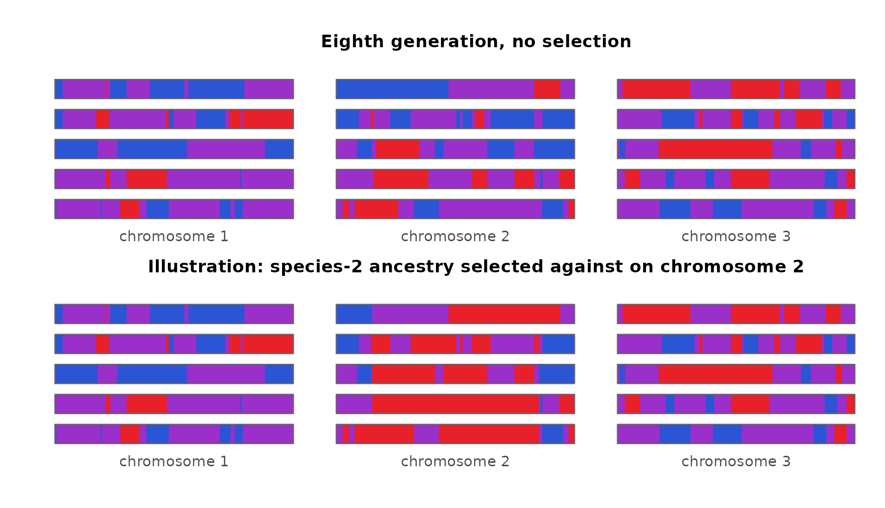
Regions under selection carry less heterozygosity and more uneven ancestry than the rest of the genome, which is what drift and age produce too. In experimental sunflower hybrids under strong selection, estimates ran ahead of the true number of generations for several generations.
How hybridclock handles it. It doesn’t: the simulations assume neutral markers. Leaving out the most differentiated markers did not help in the sunflowers, because the selected blocks covered several whole chromosomes. Where strong selection is suspected, estimates may be too old.
Summary
| Process | How it can look like age | What hybridclock does |
|---|---|---|
| Linkage | linked markers make an F2 family look like a mix of hybrid classes | simulates the map, or a range of maps;
effective_markers() for classes; counts ancestry switches
with a real map |
| Inbreeding | fewer heterozygotes at diagnostic markers | measures inbreeding at shared loci; simulates sibling mating and breeding pools |
| Drift | uneven ancestry across markers builds up faster in small populations | draws the breeding size from a range |
| Heterozygote dropout | missed heterozygotes lower H | simulates dropout; the classifier is told the rate |
| Continuing gene flow | hybrid age levels off | simulates arrivals; reports the rarer species’ age and the probability of arrivals |
| Selection | purged regions look like drift | not modeled: a stated limitation |
The settings for each are described in the getting-started vignette, and the full tutorial applies them to five real datasets.